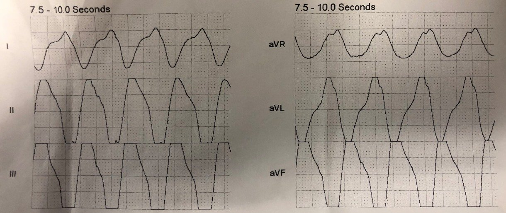
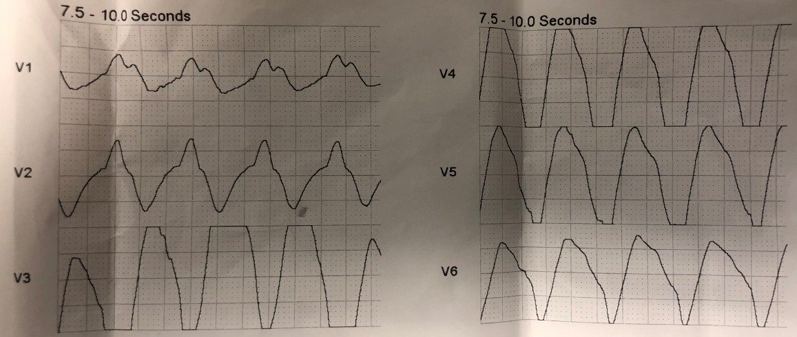
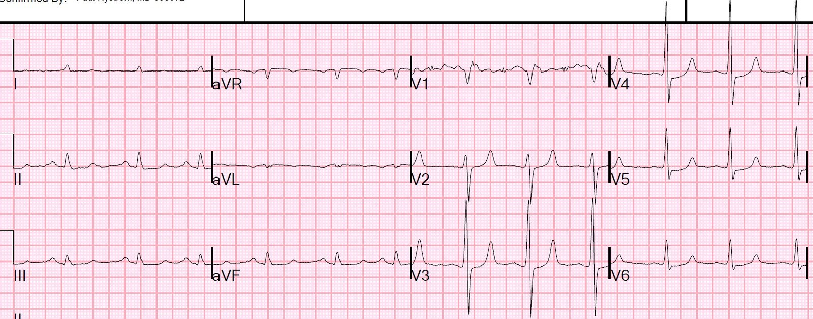

30/11/2019 — Sốc nặng, lơ mơ, và một điện tâm đồ trước viện có giá trị chẩn đoán. Thêm nữa: Chuyện này đã xảy ra như thế nào?
Bản dịch tiếng Việt của bài "Severe shock, obtunded, and a diagnostic prehospital ECG. Also: How did this happen?" – Dr. Smith’s ECG Blog. Giữ nguyên toàn bộ 3 hình ảnh và 1 video của bản gốc.
Một phụ nữ trung niên được phát hiện nằm bất tỉnh trong căn hộ của mình. Bệnh nhân đang trong tình trạng sốc, mạch nhỏ khó bắt.
Một điện tâm đồ trước viện đã được ghi:
Các chuyển đạo chi:


Các chuyển đạo trước tim


Hình ảnh này là đặc hiệu chẩn đoán (pathognomonic) của tăng kali máu (tôi cho rằng có lẽ nó cũng có thể do quá liều nặng một thuốc chẹn kênh natri).
Đây là nhịp nhanh thất (VT) do tăng kali máu (hyperK), hay là một nhịp trên thất kèm tăng kali máu?
—Tôi không nghĩ có thể nói chắc chắn được, và điều đó cũng không quan trọng. Tần số không đủ nhanh để gây sốc, nên nếu đây là VT thì ưu tiên vẫn là điều trị tăng kali máu, và thứ yếu mới là sốc điện chuyển nhịp.
Bệnh nhân cần được dùng calci tĩnh mạch ngay lập tức (kèm cả điều trị để chuyển kali vào trong tế bào).
Nhân viên cấp cứu ngoài viện đã không nhận ra tăng kali máu. Họ nghĩ đó là VT, nhưng không sốc điện. Sau đó họ nói với tôi rằng ngay cả khi họ có chẩn đoán được tăng kali máu, loại calci duy nhất họ có là calci clorid, không phải calci gluconat. ….Tuy nhiên, dùng calci clorid là hoàn toàn ổn!! Chỉ cần có một đường truyền tĩnh mạch chắc chắn để thuốc không thoát mạch. Tác hại của CaCl thoát mạch là rất nhỏ so với tử vong do tăng kali máu đe dọa tính mạng. Quan trọng: cần 3 gam calci gluconat mới bằng lượng calci có trong 1 gam CaCl.
Họ vận chuyển bệnh nhân đến khoa cấp cứu (ED). Khi đến nơi, bệnh nhân đang sốc, được đặt nội khí quản và được siêu âm tim ngay lập tức.
Trên siêu âm, quả tim trông như thế nào khi điện tâm đồ trông như vậy?
Đây:
Đây không phải là video siêu âm tim đẹp nhất thế giới, nhưng có vẻ nó cho thấy chức năng co bóp kém và thể tích thấp.
Bệnh nhân được điều trị bằng:
5 g calci gluconat, 100 mEq bicarbonat, 7.5 mg albuterol khí dung, 160 mg furosemide, 10 đơn vị insulin,
50 mL dextrose 50%.
Kết quả kali trả về là 7.4 mEq/L.
Điện tâm đồ theo dõi ở đây:


Bệnh sử, thu thập được sau đó, rất đáng chú ý:
Bệnh nhân đã được khám tại khoa cấp cứu của một bệnh viện khác 2 ngày trước đó, với kali là 2.5 mEq/L và creatinin 1.5 mg/dL. Bệnh nhân đã được khuyên nhập viện, nhưng đã rời khoa cấp cứu đó trái lời khuyên y khoa.
Khi ra về, bệnh nhân được kê viên KCl 40 mEq, uống 3 lần mỗi ngày. Bệnh nhân có điều dưỡng chăm sóc tại nhà đến thăm, và một xét nghiệm sinh hóa cơ bản (BMP) được gửi đi vào ngày hôm sau (ngày trước khi nhập viện, có lẽ là sau khi đã bù 120 mEq KCl — nếu bệnh nhân uống đúng như chỉ dẫn). Lúc đó, kali của bệnh nhân đã tăng lên 4.7 mEq/L.
Có vẻ như đơn thuốc của bệnh nhân còn kê thêm nhiều liều nữa, nên đến ngày hôm sau bệnh nhân đã bị tăng kali máu ở mức nguy hiểm.
Bệnh nhân này chỉ nặng 51 kg.
Bình luận về việc bù kali này
Một bệnh nhân 70 kg với kali 2.5 có lẽ đang thiếu hụt ít nhất 200 mEq, nhưng một bệnh nhân nặng 50 kg thì mức thiếu hụt thấp hơn đáng kể.
Điều này đặt ra vấn đề nên bù bao nhiêu kali cho một người đang hạ kali máu ở mức nguy hiểm.
Tôi đề cập đến việc bù kali trong một vài bài viết và đăng lại phần bình luận đó dưới đây.
Dưới đây là các bài khác về tăng kali máu, liều calci lớn cho tăng kali máu, và nhịp nhanh thất trong tăng kali máu
Weakness, prolonged PR interval, wide complex, ventricular tachycardia (Yếu cơ, khoảng PR kéo dài, phức bộ rộng, nhịp nhanh thất)
Very Wide and Very Fast, What is it? How would you treat? (Rất rộng và rất nhanh, đó là gì? Bạn sẽ điều trị thế nào?)
Bệnh nhân VT trong bối cảnh tăng kali máu này đã cần cả khử rung lẫn 13 g calci clorid (CaCl):
A middle aged man with unwitnessed cardiac arrest (Một người đàn ông trung niên ngừng tim không có người chứng kiến)
Hãy xem ca bệnh tuyệt vời này, trong đó tăng kali máu ban đầu đã không được chẩn đoán:
Sinus rhythm with a new wide complex QRS (Nhịp xoang với phức bộ QRS rộng mới xuất hiện)
Bài này cho thấy tác dụng của calci trên các điện tâm đồ liên tiếp:
The Effect of Calcium on Severe Hyperkalemia (Tác dụng của calci trong tăng kali máu nặng)
Terbutaline and Albuterol for Lowering of Plasma Postassium (Terbutaline và albuterol để hạ kali huyết tương)
Bù kali trong hạ kali máu
Phần này lấy từ bài viết sau:
STEMI with Life-Threatening Hypokalemia and Incessant Torsades de Pointes (STEMI kèm hạ kali máu đe dọa tính mạng và xoắn đỉnh dai dẳng liên tục)
Liệu các rối loạn nhịp có thể đã được phòng ngừa?
Tôi tìm được rất ít y văn về điều trị hạ kali máu nặng đe dọa tính mạng. Đặc biệt có rất ít tài liệu về cách điều trị khi kali dưới 2, và/hoặc khi có nhồi máu cơ tim cấp. Dưới đây là Hướng dẫn của Hội Tim mạch Hoa Kỳ (American Heart Association):
- 2005 American Heart Association Guidelines for Cardiopulmonary Resuscitation and Emergency Cardiovascular Care (Hướng dẫn của Hội Tim mạch Hoa Kỳ về Hồi sinh tim phổi và Chăm sóc tim mạch cấp cứu)
Part 10.1: Life-Threatening Electrolyte Abnormalities (Phần 10.1: Các bất thường điện giải đe dọa tính mạng)
Treatment of Hypokalemia (Điều trị hạ kali máu)
“Điều trị hạ kali máu gồm giảm thiểu mất kali thêm và bù kali. Bù kali đường tĩnh mạch được chỉ định khi có rối loạn nhịp hoặc khi hạ kali máu nặng (nồng độ kali dưới 2.5 mEq/L). Điều chỉnh hạ kali máu từ từ được ưu tiên hơn điều chỉnh nhanh, trừ khi bệnh nhân không ổn định về mặt lâm sàng.
“Có thể bù kali theo kinh nghiệm trong các tình huống cấp cứu. Khi có chỉ định, lượng kali bù đường tĩnh mạch tối đa nên là 10 đến 20 mEq/giờ, kèm theo dõi điện tâm đồ liên tục trong suốt thời gian truyền. Có thể truyền dung dịch kali đậm đặc hơn nếu dùng đường truyền tĩnh mạch trung tâm , nhưng đầu ống thông dùng để truyền không được đi vào nhĩ phải.
“Nếu ngừng tim do hạ kali máu sắp xảy ra (tức là đang có rối loạn nhịp thất ác tính), cần bù kali nhanh. Truyền liều khởi đầu 10 mEq tĩnh mạch trong 5 phút; lặp lại một lần nếu cần. Ghi vào hồ sơ bệnh án rằng việc truyền nhanh là có chủ đích, nhằm đáp ứng với tình trạng hạ kali máu đe dọa tính mạng.”
Bình luận:
Phần cuối này phù hợp với ca bệnh này. Ai cũng có lý do chính đáng để lo ngại việc truyền kali quá nhanh. Truyền nhanh làm tăng kali lên bao nhiêu? Một lần nữa, có rất ít dữ liệu thực nghiệm về chủ đề này mà tôi tìm được (xem 2 nghiên cứu dưới đây, vốn không thực sự trả lời câu hỏi này). Có lẽ có những nghiên cứu trên động vật mà tôi chưa tìm thấy?
Tổng lượng kali cơ thể: một người 70 kg có khoảng 7500 mEq kali toàn cơ thể, nhưng dịch ngoại bào chỉ chứa khoảng 48 mEq! Dĩ nhiên, khó khăn của việc bù kali là lượng dự trữ toàn cơ thể có thể đã bị cạn kiệt nhiều hơn rất nhiều so với lượng có thể bù nhanh được. Mức thiếu hụt ước tính tương ứng với việc kali huyết thanh giảm từ 4.0 xuống 3.0 mEq/L là 100-200 mEq kali toàn cơ thể, và từ 3.0 xuống 2.0 thì lượng mất tương ứng gấp đôi, tức 200-400 mEq.* [Sterns RH, và cs. Internal potassium balance and the control of the plasma potassium concentration. Medicine (Baltimore) 1981;60:339-54].
Nhưng 100 mEq truyền một lần sẽ làm kali huyết thanh tăng thêm 30 mEq/L (và gây tử vong ngay lập tức)!!
*Bài tổng quan trên NEJM được dẫn dưới đây (và ACLS, dù điều đó có giá trị đến đâu) cho rằng, trung bình, ở một người 70 kg “điển hình”, kali huyết thanh giảm 0.3 mEq/L cho mỗi 100 mEq thiếu hụt toàn cơ thể. Tuy nhiên, bài tổng quan này dẫn bài của Sterns ở trên, mà theo tôi đọc thì bài đó không nói điều này.
Dưới đây là một số phép tính cho một liều nhanh an toàn:
Một người 70 kg có khoảng 5 lít máu, trong đó 3 lít là huyết thanh (2 lít là hồng cầu). Nếu truyền 10 mEq thật nhanh, không để thời gian cho kali dịch chuyển vào nội bào, thì kali huyết thanh sẽ tăng khoảng 3.3 mEq/L. Nếu bệnh nhân đang ở mức 1.8, nó sẽ tăng lên 5.1 mEq/L. Chỉ cần đưa kali lên trên 3.0 là đã giảm nguy cơ rất nhiều (dù trong STEMI, mức tối ưu là khoảng 4.0-4.5 mEq/L). Một liều bơm nhanh 5 mEq sẽ làm kali của bệnh nhân này tăng thêm 1.6, từ 1.8 lên 3.4 mEq/L. Khó khăn nằm ở việc ước tính sự dịch chuyển đang tiếp diễn. Khi bạn truyền kali, nó sẽ bắt đầu dịch chuyển vào các tế bào đang thiếu kali và kali huyết thanh sẽ lại giảm nhanh. Vì vậy, ở những bệnh nhân như thế này, điều tối quan trọng là phải đo kali lặp lại và nhanh chóng sau mỗi liều bơm nhanh, rồi bổ sung khi cần.
Trong ca được trình bày, tôi không rõ liệu 10 mEq kali đó có được truyền nhanh hay không. Tôi ngờ rằng nó đã được cài đặt truyền trong 1 giờ bằng bơm, vốn là thực hành thường quy. Sẽ rất khó để thuyết phục điều dưỡng truyền nhanh hơn! Tuy nhiên, trong ca này, sẽ là phù hợp nếu truyền trong 5-10 phút, có theo dõi, rồi đo lại kali ngay lập tức và sẵn sàng cho thêm.
Làm vấn đề phức tạp thêm là hạ kali máu nặng có thể gây tiêu cơ vân và kali được giải phóng sau đó, dẫn đến tăng kali máu!
Đây là một bài khác về hạ kali máu (hypoK):
Patient with severe DKA, look at the ECG (Bệnh nhân nhiễm toan ceton do đái tháo đường nặng, hãy xem điện tâm đồ)
Trong bài này, tôi đã bàn về một bệnh nhân khác mà tôi điều trị:
Ngừng tim ngoài bệnh viện do hạ kali máu
Gần đây tôi có một ca ngừng tim ngoài bệnh viện mà hóa ra là do hạ kali máu.
Chúng tôi đã không thể hồi sức thành công cho bệnh nhân, nhưng chúng tôi đã đạt được tưới máu rất tốt với hồi sinh tim phổi bằng máy LUCAS, đến mức máy đo độ bão hòa oxy qua mạch nảy có dạng sóng rất tốt và độ bão hòa 100%, CO2 cuối thì thở ra là 35, và theo dõi tưới máu não gần như bình thường trong suốt quá trình cố gắng hồi sức. Điều này xảy ra trước khi chúng tôi bắt đầu dùng ECMO cho rung thất kháng trị.
Trong lúc hồi sức, tôi đã ra y lệnh bơm nhanh 10 mEq KCl, nhưng bệnh nhân lại được bơm nhanh 40 mEq KCl (nhiều hơn rất nhiều so với khuyến cáo) Bác sĩ nội trú đã ra y lệnh 40 mEq và đó là con số mà các điều dưỡng nghe được.
40 mEq có quá nhiều không? Hay là lượng vừa đúng?
Trái với dự đoán của tôi, sau khi bơm nhanh 40 mEq, kali chỉ tăng lên 4.2 mEq/L.
Lượng kali đúng để bơm nhanh trong hạ kali máu đe dọa tính mạng là bao nhiêu?
Ở một người 70 kg, có 5 lít máu và 3 lít huyết thanh. Vì kali cần một khoảng thời gian (bao lâu?) để dịch chuyển ra khỏi lòng mạch vào khoang kẽ rồi vào khoang nội bào, nên về lý thuyết, 3.0 mEq kali được bơm nhanh và đã lưu hành sẽ làm kali huyết thanh tăng ngay 1.0 mEq/L, và 10 mEq sẽ làm tăng 3.3 mEq/L, từ 1.9 lên 5.2. Như vậy, 40 mEq lẽ ra phải làm tăng 13 mEq/L!!
Nhưng đó là trước khi kali tái phân bố vào khoang kẽ.
Như tôi đã nêu ở trên, trong ca ngừng tim của chúng tôi, sau khi bơm nhanh 40 mEq, kali chỉ tăng lên 4.2 mEq/L.
Có khoảng 13 lít dịch ngoại bào ở một người 70 kg (10 lít dịch kẽ + 3 lít huyết thanh). Vì vậy, nếu kali tái phân bố rất nhanh vào khoang ngoại bào này, thì 40 mEq là phù hợp.
Khó khăn nằm ở việc ước tính sự dịch chuyển đang tiếp diễn. Khi bạn truyền kali, nó sẽ bắt đầu dịch chuyển vào các tế bào đang thiếu kali và kali huyết thanh sẽ lại giảm nhanh. Vì vậy, ở những bệnh nhân như thế này, điều tối quan trọng là phải đo kali lặp lại và nhanh chóng sau mỗi liều bơm nhanh, rồi bổ sung khi cần.